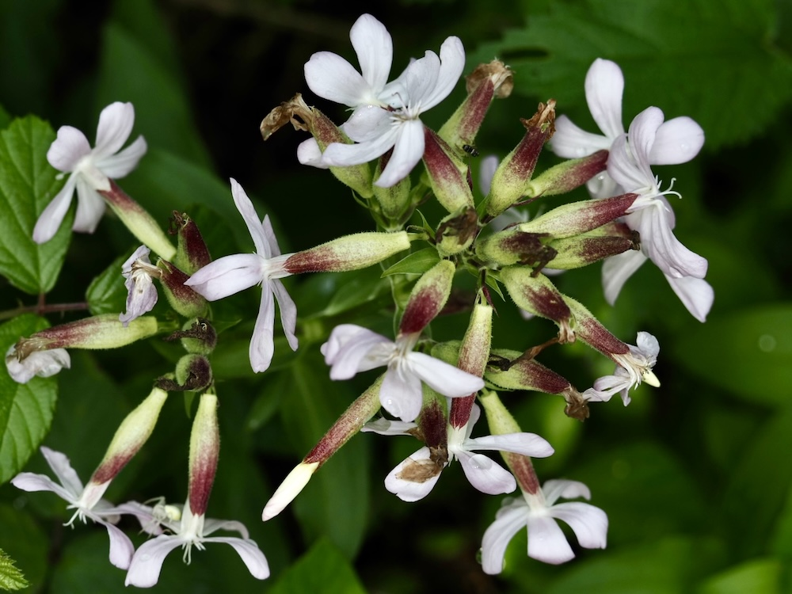

Eine Seife aus der Wiese
Wer die Wurzeln und Blätter des Seifenkrauts in Wasser zerquetscht, kriegt tatsächlich Schaum — die Pflanze enthält Saponine, oberflächenaktive Substanzen, die wie chemische Seife wirken. Im Mittelalter und bis weit ins 19. Jahrhundert war Seifenkraut DAS Waschmittel für empfindliche Stoffe wie Seide und Wolle, weil es nicht zerstört. Heute wird es immer noch in der Restaurierung alter Textilien verwendet — sanfter geht’s nicht.
Aus dem Süden eingewandert
Saponaria stammt ursprünglich aus dem Mittelmeerraum, wurde aber bereits in der Antike als Wasch- und Heilpflanze nach Mitteleuropa gebracht. Heute ist sie in vielen Bauerngärten verwildert und an Bachufern eingebürgert. Sie ist kein invasiver Neophyt — bleibt meist in moderaten Beständen und konkurriert nicht mit heimischen Arten.